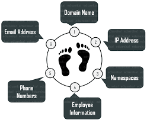
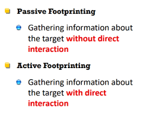
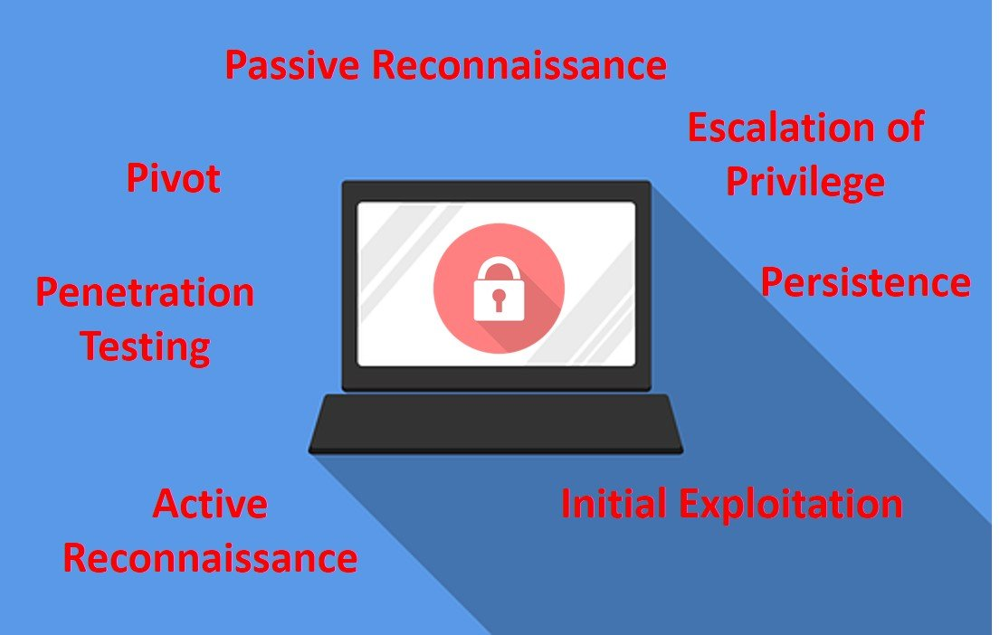
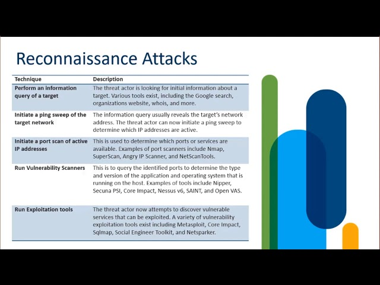

It allows a hacker to gain information about the target system or network. This information can be used to carry out attacks on the system. That is the reason by which it may be named a Pre-Attack, since all the information is reviewed in order to get a complete and successful resolution of the attack. Footprinting is also used by ethical hackers and penetration testers to find security flaws and vulnerabilities within their own company's network before a malicious hacker does.
Footprinting allows Hackers to gather the basic security configurations of a target machine along with network route and data flow.
Once attacker finds the vulnerabilities he/she focuses towards a specific area of the target machine.
It allows the hacker to identify as to which attack is more handy to hack the target system.
Types Of Footprinting
There are two types of Footprinting that can be used: active Footprinting and passive Footprinting. Active Footprinting is the process of using tools and techniques, such as performing a ping sweep or using the traceroute command, to gather information on a target. Active Footprinting can trigger a target's Intrusion Detection System (IDS) and may be logged, and thus requires a level of stealth to successfully do.[4] Passive Footprinting is the process of gathering information on a target by innocuous, or, passive, means. Browsing the target's website, visiting social media profiles of employees, searching for the website on WHOIS, and performing a Google search of the target are all ways of passive Footprinting. Passive Footprinting is the stealthier method since it will not trigger a target's IDS or otherwise alert the target of information being gathered.

Active vs Passive Footprinting
Active footprinting means to perform footprinting by getting in direct touch with the target machine.
Passive foot printing means collecting information of a system located at a remote distance from the attacker.

Type of information gathered and its sources
- Operating system of the target machine.
- Firewall.
- IP address.
- Network map.
- Security configurations of the target machine.
- Email id, password.
- Server configurations.
- URLs.
- VPN.
-
Social Media:
Most people has the tendency to release most of their information online. Hackers use this sensitive information in a big deal. They may create a fake account for looking real to be added as friend or to follow someone's account for grabbing their information.
-
JOB websites:
Organizations share some confidential data in many JOB websites like monsterindia.com. For example, a company posted on a website : "Job Opening for lighttpd 2.0 Server Administrator". From this information can be gathered that an organization uses lighttpd web server of version 2.0 .
-
Google:
Search engines such as Google have the ability to perform more powerful searches than one can think and one had gone through. It can be used by hackers and attackers to do something that has been termed Google hacking. Basic search techniques combined with advanced operators can do a great damage. Server operators exist like "inurl:","allinurl:","filetype:", etc. For example, devices connected to the Internet can be found. A search string such as inurl:"ViewerFrame?Mode=" will find public web cameras. "The "link:" search operator that Google used to have, has been turned off by now (2017)".
Google can be used to uncover many pieces of sensitive information that shouldn't be revealed. A term even exists for the people who blindly post this information on the internet, they are called "Google Dorks".
-
Social Engineering:
There are various techniques that fall in this category. A few of them are:
- Eavesdropping - Attacker tries to record personal conversation of the target victim with someone that's being held over communication mediums like Telephone.
- Shoulder Surfing - In this technique Attacker tries to catch the personal information like Email id, password, etc; of the victim by looking over the victim's shoulder while the same is entering(typing/writing) his/her personal details for some work.
-
Archive.org:
Archived version refers to the older version of the website which existed in a time before and many features of the website has been changed. archive.org is a website that collects snapshots of all the website at a regular interval of time. This site can be used to get some information that does not exist now but existed before on the site.
-
An Organization's Website:
Its the best place to begin for an attacker. If an attacker wants to look for open source information, which is information freely provided to clients, customers, or the general public then simply the best option is: "ORGANISATION's WEBSITE"
-
Using Neo Trace:
NeoTrace is a powerful tool for getting path information. The graphical display displays the route between you and the remote site, including all intermediate nodes and their information. NeoTrace is a well-known GUI route tracer program. Along with a graphical route, it also displays information on each node such as IP address, contact information, and location.
-
Whois:
This is a website which serves a good purpose for Hackers. Through this website information about the domain name, email-id, domain owner, etc; a website can be traced. Basically, this serves a way for Website Footprinting.

Counter Measures
- Avoid posting confidential data in social media websites.
- Avoid accepting unwanted friend requests on social media platforms.
- Promotion of education on various hacking tricks.
- Usage of footprinting techniques for identifying and removing sensitive information from social media platforms.
- Proper configuration of web servers to avoid loss of information about system configuration.
